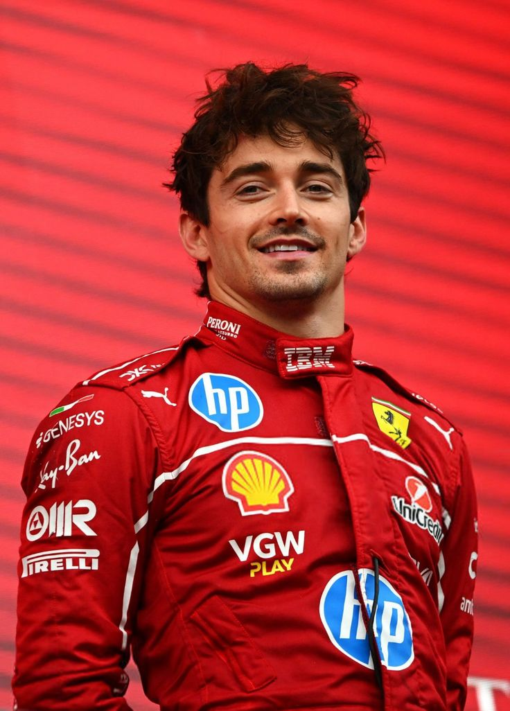

Scuderia Ferrari в Формуле-1
Scuderia Ferrari — самая легендарная и титулованная команда в истории Формулы-1, выступающая с самого первого сезона в 1950 году. Ни одна другая команда не может похвастаться таким непрерывным присутствием в чемпионате.
За всю историю Ferrari завоевала 16 титулов Кубка конструкторов и 15 титулов чемпионов мира среди пилотов, одержав более 245 побед на Гран-при.
Самая успешная эра команды пришлась на 2000-2004 годы с Михаэлем Шумахером, когда Ferrari выиграла 5 титулов подряд. Команда продолжает бороться за чемпионство, олицетворяя итальянскую страсть к гонкам и инженерное превосходство.
Главные достижения Ferrari:
- 16 титулов Кубка конструкторов (рекорд)
- 15 титулов чемпионов мира среди пилотов
- Более 245 побед на Гран-при
- 254 поул-позиции и 264 быстрых круга
- Непрерывное участие с 1950 года
Шарль Леклер

Шарль Леклер (Charles Leclerc) — монегасский гонщик, выступающий за Scuderia Ferrari с 2019 года. Родился 16 октября 1997 года в Монте-Карло, Монако.
Леклер считается одним из самых талантливых молодых пилотов современной Формулы-1. Он дебютировал в Ferrari в возрасте 21 года и сразу доказал свой класс, одержав две победы в дебютном сезоне.
Достижения в карьере:
- Чемпион GP3 (2016) и Формулы-2 (2017)
- 7 побед в Формуле-1 (по состоянию на 2025 год)
- 26 поул-позиций
- Вице-чемпион мира 2022 года
- Лидер команды Ferrari с 2019 года
Леклер известен своей агрессивной, но точной манерой вождения, особенно в квалификациях. Он носит прозвище "Il Predestinato" (Избранный) среди итальянских болельщиков Ferrari.
Интересные факты:
- Шарль вырос в Монако, где проходит один из самых престижных Гран-при Формулы-1. Его первая победа в Ф1 состоялась именно в Монако в 2024 году — исполнение мечты всей жизни.
- Леклер — талантливый пианист. Он играет на фортепиано с детства и часто публикует видео своих выступлений в социальных сетях.
- Его спортивным кумиром и наставником был Жюль Бьянки, также пилот Ferrari, трагически погибший в 2015 году. Шарль посвятил ему свою карьеру и носит шлем с особой памятной раскраской.
- В 2019 году он стал самым молодым пилотом Ferrari, завоевавшим поул-позицию, а затем и победу на Гран-при.
- Леклер свободно говорит на пяти языках: французском, английском, итальянском, монегасском и испанском.
- До перехода в Ferrari он выступал за Sauber (Alfa Romeo) всего один сезон (2018), где показал впечатляющие результаты на слабой машине.
- Его любимая трасса — Спа-Франкоршам в Бельгии, где он одержал свою первую победу в Ф1 в 2019 году.
- Шарль носит гоночный номер 16 — номер, который носил его крестный отец Жюль Бьянки.
- Его фраза "I am stupid", которую он произнос когда врезался в стену во второй квалификационной сессии Гран-при Азебайджана
Льюис Хэмилтон

Льюис Хэмилтон — британский гонщик, перешедший в Scuderia Ferrari в 2025 году после 12 лет выступлений за Mercedes. Родился 7 января 1985 года в Стивенидже, Великобритания.
Хэмилтон — один из величайших гонщиков в истории Формулы-1, 7-кратный чемпион мира (2008, 2014, 2015, 2017, 2018, 2019, 2020), разделяющий этот рекорд с Михаэлем Шумахером.
Достижения в карьере:
- 7 титулов чемпиона мира
- 105 побед в Формуле-1 (рекорд всех времён)
- 104 поул-позиции (рекорд)
- 197 подиумов
- Дебют за Ferrari в 2025 году в возрасте 40 лет
- Первый и единственный темнокожий чемпион Формулы-1
Переход Хэмилтона в Ferrari стал одним из самых громких событий в современной Формуле-1. Он присоединился к команде с целью выиграть 8-й титул чемпиона мира и стать частью легендарной истории итальянской команды.
Интересные факты:
- Льюис увлекается модой и музыкой, регулярно посещает модные показы и выпустил несколько треков под псевдонимом XNDA.
- В 10 лет он подошёл к главе McLaren и сказал: "Однажды я буду гоняться за вашу команду". Через три года McLaren подписал с ним контракт.
- Хэмилтон был посвящён в рыцари в 2021 году за заслуги перед автоспортом.
- Его кумир в детстве — легенда Айртон Сенна. Льюис часто носит шлем в стиле Сенны.
- Он создал благотворительный фонд Mission 44 для помощи молодёжи из неблагополучных районов.
- У Льюиса три собаки-бульдога: Роско и Коко, которые путешествуют с ним по миру.
- Хэмилтон выиграл хотя бы одну гонку в каждом сезоне с 2007 по 2023 год — рекорд непрерывности.
Хэмилтон использует свою платформу для борьбы за социальную справедливость, разнообразие и экологию, оставаясь одним из самых влиятельных спортсменов мира.
Вернуться на главную

{kind=link}